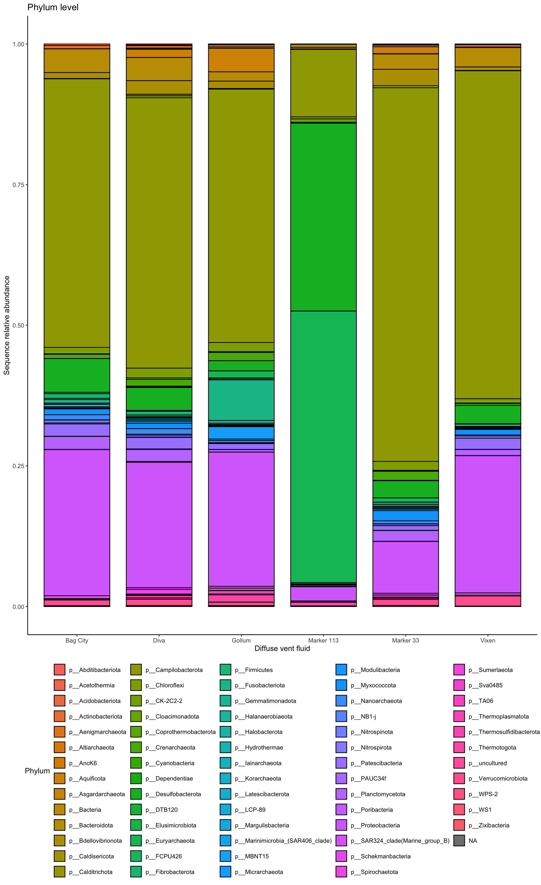
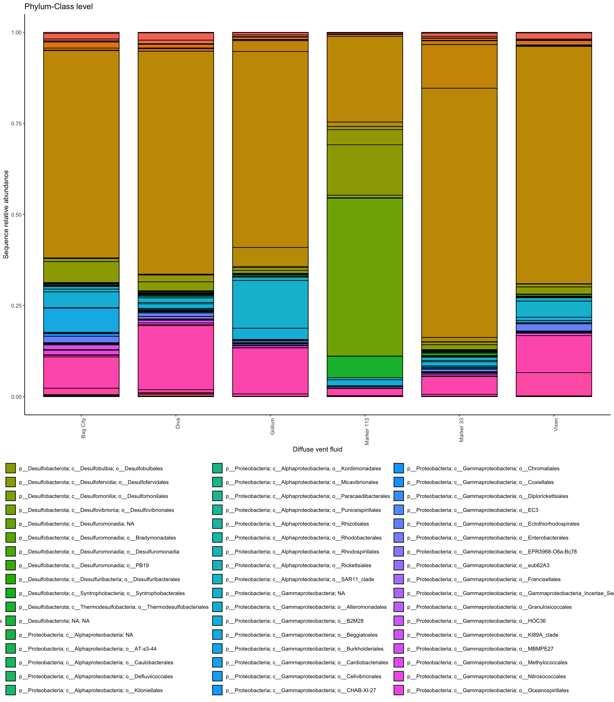

# Load qiime2
module load QIIME2/2024.10-Amplicon
echo "import sequences"
qiime tools import \
--type 'SampleData[PairedEndSequencesWithQuality]' \
--input-path /scratch/group/hu-lab/qiime-axial-2023_18S_16S/manifest-axial-prok \
--output-path /scratch/group/hu-lab/qiime-axial-2023_18S_16S/16S_output_axial_2023/pe-input-16s.qza \
--input-format PairedEndFastqManifestPhred33V2
qiime demux summarize \
--i-data /scratch/group/hu-lab/qiime-axial-2023_18S_16S/16S_output_axial_2023/pe-input-16s.qza \
--o-visualization /scratch/group/hu-lab/qiime-axial-2023_18S_16S/16S_output_axial_2023/pe-input-16s.qzv
echo "Use cutadapt to remove primer sequences"
qiime cutadapt trim-paired \
--i-demultiplexed-sequences /scratch/group/hu-lab/qiime-axial-2023_18S_16S/16S_output_axial_2023/pe-input-16s.qza \
--p-cores $SLURM_CPUS_PER_TASK \
--p-front-f GTGYCAGCMGCCGCGGTAA \
--p-front-r GGACTACNVGGGTWTCTAAT \
--p-cores $SLURM_CPUS_PER_TASK \
--p-front-f GTGYCAGCMGCCGCGGTAA \
--p-front-r GGACTACNVGGGTWTCTAAT \
--p-error-rate 0.1 \
--p-overlap 3 \
--p-match-adapter-wildcards \
--o-trimmed-sequences /scratch/group/hu-lab/qiime-axial-2023_18S_16S/16S_output_axial_2023/pe-input-trimmed-16s.qza
qiime demux summarize \
--i-data /scratch/group/hu-lab/qiime-axial-2023_18S_16S/16S_output_axial_2023/pe-input-trimmed-16s.qza \
--o-visualization /scratch/group/hu-lab/qiime-axial-2023_18S_16S/16S_output_axial_2023/pe-input-trimmed-16s.qzv
qiime dada2 denoise-paired \
--i-demultiplexed-seqs /scratch/group/hu-lab/qiime-axial-2023_18S_16S/16S_output_axial_2023/pe-input-trimmed-16s.qza \
--p-trunc-len-f 250 \
--p-trunc-len-r 225 \
--p-max-ee-f 2 \
--p-max-ee-r 2 \
--p-min-overlap 10 \
--p-pooling-method independent \
--p-n-reads-learn 1000000 \
--p-n-threads $SLURM_CPUS_PER_TASK \
--p-chimera-method pooled \
--o-table /scratch/group/hu-lab/qiime-axial-2023_18S_16S/16S_output_axial_2023/pe-trimmed-asv-table-16s.qza \
--o-representative-sequences /scratch/group/hu-lab/qiime-axial-2023_18S_16S/16S_output_axial_2023/pe-trimmed-asv-ref-seq-16s.qza \
--o-denoising-stats /scratch/group/hu-lab/qiime-axial-2023_18S_16S/16S_output_axial_2023/pe-trimmed-asv-dada2stats-16s.qza
echo "dada2 step completed"
qiime tools export \
--input-path /scratch/group/hu-lab/qiime-axial-2023_18S_16S/16S_output_axial_2023/pe-trimmed-asv-table-16s.qza \
--output-path /scratch/group/hu-lab/qiime-axial-2023_18S_16S/16S_output_axial_2023/
biom convert \
-i /scratch/group/hu-lab/qiime-axial-2023_18S_16S/16S_output_axial_2023/feature-table.biom \
-o /scratch/group/hu-lab/qiime-axial-2023_18S_16S/16S_output_axial_2023/axial-2023-16s-asv-table.tsv \
--to-tsv
echo "asv table is prepped"
qiime metadata tabulate \
--m-input-file /scratch/group/hu-lab/qiime-axial-2023_18S_16S/16S_output_axial_2023/pe-trimmed-asv-dada2stats-16s.qza \
--o-visualization /scratch/group/hu-lab/qiime-axial-2023_18S_16S/16S_output_axial_2023/pe-trimmed-asv-dada2stats-16s.qzv
echo "assign taxonomy"
qiime feature-classifier classify-consensus-vsearch \
--i-query /scratch/group/hu-lab/qiime-axial-2023_18S_16S/16S_output_axial_2023/pe-trimmed-asv-ref-seq-16s.qza \
--i-reference-reads /scratch/group/hu-lab/databases/silva/silva-138-99-seqs.qza \
--i-reference-taxonomy /scratch/group/hu-lab/databases/silva/silva-138-99-tax.qza \
--output-dir /scratch/group/hu-lab/qiime-axial-2023_18S_16S/16S_output_axial_2023/taxonomy-0.9_0.8_SILVA \
--p-threads $SLURM_CPUS_PER_TASK \
--p-maxaccepts 10 \
--p-perc-identity 0.90 \
--p-min-consensus 0.80
qiime tools export \
--input-path /scratch/group/hu-lab/qiime-axial-2023_18S_16S/16S_output_axial_2023/taxonomy-0.9_0.8_SILVA/search_results.qza \
--output-path /scratch/group/hu-lab/qiime-axial-2023_18S_16S/16S_output_axial_2023/taxonomy-0.9_0.8_SILVA/tax-result-SILVA-16s
qiime tools export \
--input-path /scratch/group/hu-lab/qiime-axial-2023_18S_16S/16S_output_axial_2023/taxonomy-0.9_0.8_SILVA/classification.qza \
--output-path /scratch/group/hu-lab/qiime-axial-2023_18S_16S/16S_output_axial_2023/taxonomy-0.9_0.8_SILVA/Axial Seamount 16S
1 Axial Seamount 16S rRNA gene sequencing
From 2023 expedition
1.1 Sequence analysis
Running QIIME2 here: /scratch/group/hu-lab/qiime-axial-2023_18S_16S
SLURM script for running 16S analysis:
1.2 Set up R environment & import data
library(tidyverse)── Attaching core tidyverse packages ──────────────────────── tidyverse 2.0.0 ──
✔ dplyr 1.1.4 ✔ readr 2.1.5
✔ forcats 1.0.0 ✔ stringr 1.5.1
✔ ggplot2 3.5.2 ✔ tibble 3.2.1
✔ lubridate 1.9.4 ✔ tidyr 1.3.1
✔ purrr 1.0.4
── Conflicts ────────────────────────────────────────── tidyverse_conflicts() ──
✖ dplyr::filter() masks stats::filter()
✖ dplyr::lag() masks stats::lag()
ℹ Use the conflicted package (<http://conflicted.r-lib.org/>) to force all conflicts to become errorslibrary(plotly)
Attaching package: 'plotly'
The following object is masked from 'package:ggplot2':
last_plot
The following object is masked from 'package:stats':
filter
The following object is masked from 'package:graphics':
layoutlibrary(readxl)asv <- read.delim(file = "input-data/axial-2023-16s-asv-table.tsv", sep = "\t", skip = 1)
# head(asv)
# colnames(asv)tax <- read.delim(file = "input-data/taxonomy-16S.tsv", sep = "\t")
head(tax) Feature.ID
1 00263e499fb100b458165203587fa0de
2 002a421e925274619c20acd6ae1c0cdf
3 0045ab114703bd9ff5ba11a33771a4f5
4 0047d0e5ae496d69df36153e71bd2c3f
5 004bd364f4f6bb88cd0c8f9a5a35e2dd
6 005caa43095f0354d924d44277c3df42
Taxon
1 d__Bacteria; p__Acidobacteriota; c__Vicinamibacteria; o__Vicinamibacterales; f__uncultured; g__uncultured
2 d__Bacteria; p__Marinimicrobia_(SAR406_clade); c__Marinimicrobia_(SAR406_clade); o__Marinimicrobia_(SAR406_clade); f__Marinimicrobia_(SAR406_clade); g__Marinimicrobia_(SAR406_clade); s__uncultured_bacterium
3 d__Bacteria; p__Actinobacteriota; c__Acidimicrobiia; o__Microtrichales; f__Microtrichaceae; g__Sva0996_marine_group
4 d__Bacteria; p__Bdellovibrionota; c__Bdellovibrionia; o__Bacteriovoracales; f__Bacteriovoracaceae; g__Peredibacter
5 Unassigned
6 d__Bacteria; p__Campilobacterota; c__Campylobacteria; o__Campylobacterales; f__Arcobacteraceae; g__uncultured
Consensus
1 1.0
2 1.0
3 0.9
4 1.0
5 1.0
6 0.9metadata_samples <- read_excel("metadata-axial-2023.xlsx", sheet = "metadata") %>%
select(-NUM, -OLD_NAME_ARCHIVE)New names:
• `lat_long` -> `lat_long...21`
• `lat_long` -> `lat_long...22`biotic <- read_excel("metadata-axial-2023.xlsx", sheet = "biotic")
# head(metadata_samples)
# head(biotic)1.2.1 Merge data
asv_long_tax <- asv %>%
pivot_longer(cols = -c("X.OTU.ID"), names_to = "SAMPLE_NAME", values_to = "SEQUENCE_COUNT") %>%
select(Feature.ID = "X.OTU.ID", SAMPLE_NAME, SEQUENCE_COUNT) %>%
filter(grepl("AXIAL_23", SAMPLE_NAME)) %>%
filter(SEQUENCE_COUNT > 0) %>%
left_join(metadata_samples) %>%
left_join(tax)Joining with `by = join_by(SAMPLE_NAME)`
Joining with `by = join_by(Feature.ID)`head(asv_long_tax)# A tibble: 6 × 27
Feature.ID SAMPLE_NAME SEQUENCE_COUNT lab_num dive_ctd sample_name
<chr> <chr> <dbl> <chr> <chr> <chr>
1 f79668913b734f792553e… AXIAL_23_1… 56 129 HUBERLAB ControlTre…
2 f79668913b734f792553e… AXIAL_23_1… 4 137b J21505 BagCity
3 f79668913b734f792553e… AXIAL_23_1… 8 140b J21505 Vixen
4 f79668913b734f792553e… AXIAL_23_1… 16 144b J21506 Gollum
5 f79668913b734f792553e… AXIAL_23_1… 16 151b J21506 Gollum
6 f79668913b734f792553e… AXIAL_23_1… 89532 154b J21505 Mkr113
# ℹ 21 more variables: collection_method <chr>, sample_type <chr>,
# sample_identifier <chr>, filter <chr>, processing <chr>, primer <chr>,
# target_population <chr>, location_name <chr>, depth_category <chr>,
# depth <dbl>, fluid_origin <chr>, `AXIAL YEAR` <chr>, lat <chr>, long <dbl>,
# lat_long...21 <chr>, lat_long...22 <chr>, description_1 <chr>,
# Description_2 <chr>, DATE <chr>, Taxon <chr>, Consensus <dbl># unique(asv_long_tax$collection_method)
colnames(asv_long_tax) [1] "Feature.ID" "SAMPLE_NAME" "SEQUENCE_COUNT"
[4] "lab_num" "dive_ctd" "sample_name"
[7] "collection_method" "sample_type" "sample_identifier"
[10] "filter" "processing" "primer"
[13] "target_population" "location_name" "depth_category"
[16] "depth" "fluid_origin" "AXIAL YEAR"
[19] "lat" "long" "lat_long...21"
[22] "lat_long...22" "description_1" "Description_2"
[25] "DATE" "Taxon" "Consensus" 2 Revise dataframe for plotting
unique(asv_long_tax$sample_name)[1] "ControlTreatment" "BagCity" "Vixen" "Gollum"
[5] "Mkr113" "Mkr33" "Diva" refined_asv_table <- asv_long_tax %>%
# Removed controls
filter(sample_name != "ControlTreatment") %>%
# Removed ASVs with only 1 sequence
filter(SEQUENCE_COUNT > 1) %>%
group_by(SAMPLE_NAME, dive_ctd, sample_name, collection_method, sample_identifier, filter, processing, location_name, Taxon) %>%
summarise(AVG_SEQ = mean(SEQUENCE_COUNT)) %>%
separate(Taxon, into = c("Domain", "Phylum", "Class", "Order", "Family", "Genus-Spp"), sep = "; ", remove = FALSE)`summarise()` has grouped output by 'SAMPLE_NAME', 'dive_ctd', 'sample_name',
'collection_method', 'sample_identifier', 'filter', 'processing',
'location_name'. You can override using the `.groups` argument.Warning: Expected 6 pieces. Additional pieces discarded in 918 rows [5, 10, 11, 12, 14,
15, 17, 21, 25, 29, 31, 32, 35, 38, 39, 40, 49, 59, 67, 70, ...].Warning: Expected 6 pieces. Missing pieces filled with `NA` in 586 rows [1, 2, 6, 16,
22, 23, 36, 43, 50, 56, 63, 71, 73, 74, 86, 97, 98, 113, 115, 116, ...].head(refined_asv_table) # A tibble: 6 × 16
# Groups: SAMPLE_NAME, dive_ctd, sample_name, collection_method,
# sample_identifier, filter, processing, location_name [1]
SAMPLE_NAME dive_ctd sample_name collection_method sample_identifier filter
<chr> <chr> <chr> <chr> <chr> <chr>
1 AXIAL_23_137b… J21505 BagCity SUPR F712 PES02
2 AXIAL_23_137b… J21505 BagCity SUPR F712 PES02
3 AXIAL_23_137b… J21505 BagCity SUPR F712 PES02
4 AXIAL_23_137b… J21505 BagCity SUPR F712 PES02
5 AXIAL_23_137b… J21505 BagCity SUPR F712 PES02
6 AXIAL_23_137b… J21505 BagCity SUPR F712 PES02
# ℹ 10 more variables: processing <chr>, location_name <chr>, Taxon <chr>,
# Domain <chr>, Phylum <chr>, Class <chr>, Order <chr>, Family <chr>,
# `Genus-Spp` <chr>, AVG_SEQ <dbl>unique(refined_asv_table$filter)[1] "PES02" "sterivex"unique(refined_asv_table$Domain)[1] "Unassigned" "d__Archaea" "d__Bacteria" "d__Eukaryota"2.1 Phylum level
bar_plot_Phylum <- refined_asv_table %>%
filter(Domain != "Unassigned") %>%
filter(Domain != "d__Eukaryota") %>%
group_by(collection_method, location_name, Domain, Phylum) %>%
summarise(SEQ_SUM = sum(AVG_SEQ)) %>%
ggplot(aes(x = location_name, y = SEQ_SUM, fill = Phylum)) +
geom_bar(stat = "identity", position = "fill",color = "black", width = 0.8) +
theme_classic() +
theme(legend.position = "bottom") +
labs(x = "Diffuse vent fluid", y = "Sequence relative abundance",
title = "Phylum level")`summarise()` has grouped output by 'collection_method', 'location_name',
'Domain'. You can override using the `.groups` argument.ggplotly(bar_plot_Phylum)2.1.1 Non-interactive plot
bar_plot_Phylum
2.2 Phylum-class subset
Isolate: a subset of bacteria
subset <- c("p__Proteobacteria","p__Campilobacterota", "p__Desulfobacterota", "p__Bacteroidota")# View(refined_asv_table %>%
# filter(Domain != "Unassigned") %>%
# filter(Domain != "d__Eukaryota"))bar_plot_subset_bacteria <- refined_asv_table %>%
filter(Domain != "Unassigned") %>%
filter(Domain != "d__Eukaryota") %>%
filter(Phylum %in% subset) %>%
unite(tax, Phylum, Class, Order, sep = "; ") %>%
group_by(location_name, tax) %>%
summarise(SEQ_SUM = sum(AVG_SEQ)) %>%
ggplot(aes(x = location_name, y = SEQ_SUM, fill = tax)) +
geom_bar(stat = "identity", position = "fill",color = "black", width = 0.8) +
theme_classic() +
theme(legend.position = "bottom",
axis.text.x = element_text(angle = 90, hjust = 1, vjust = 1)) +
labs(x = "Diffuse vent fluid", y = "Sequence relative abundance",
title = "Phylum-Class level")`summarise()` has grouped output by 'location_name'. You can override using the
`.groups` argument.ggplotly(bar_plot_subset_bacteria)2.2.1 non-interactive
bar_plot_subset_bacteria
## Report all taxa representedtmp <- refined_asv_table %>% ungroup() %>%
select(Taxon) %>% distinct()